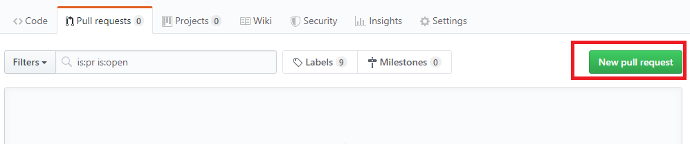
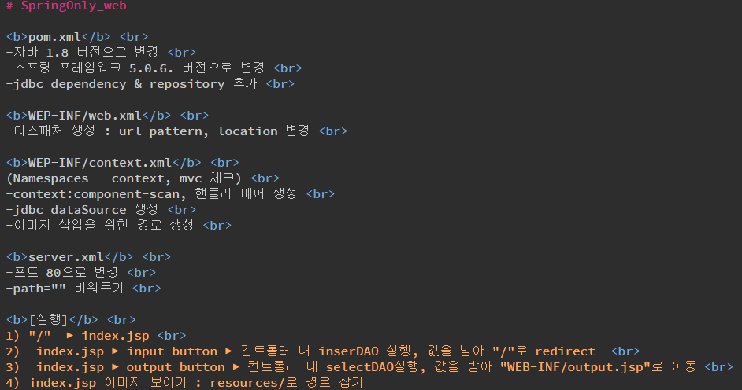
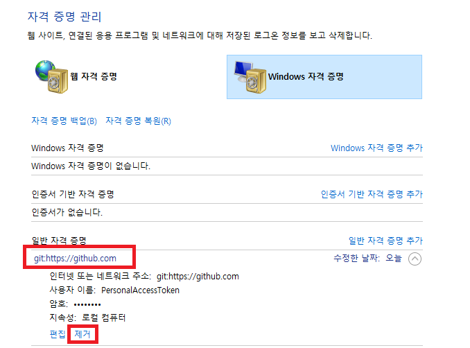

Git to Hell
1. git 설치하기
Download > Window > Downloading Git
64-bit Git for Windows Portable 다운로드
: 경로 지정 후 설치를 완료하세요
: PortableGit이라는 폴더가 만들어집니다
2. path 설정하기

내pc 우클릭 > 속성 > 고급시스템 설정 > 환경변수 > path 편집
: path를 클릭하고 편집 버튼을 누르세요
: 빈칸에 Portable 내 bin 폴더의 경로를 채워넣고 적용을 누르세요
3. git 실행하기
윈도우 검색 > cmd를 실행 후, "git"을 입력하세요
*cmd 창에 명령어를 입력할 때는 띄어쓰기 등을 잘 지켜주셔야 합니다
C:\Users\user1>git
These are common Git commands used in various situations:start a working area (see also: git help tutorial)
clone Clone a repository into a new directory
init Create an empty Git repository or reinitialize an existing one
work on the current change (see also: git help everyday)
add Add file contents to the index
mv Move or rename a file, a directory, or a symlink
reset Reset current HEAD to the specified state
rm Remove files from the working tree and from the index
examine the history and state (see also: git help revisions)
bisect Use binary search to find the commit that introduced a bug
grep Print lines matching a pattern
log Show commit logs
show Show various types of objects
status Show the working tree status
grow, mark and tweak your common history
branch List, create, or delete branches
checkout Switch branches or restore working tree files
commit Record changes to the repository
diff Show changes between commits, commit and working tree, etc
merge Join two or more development histories together
rebase Reapply commits on top of another base tip
tag Create, list, delete or verify a tag object signed with GPG
collaborate (see also: git help workflows)
fetch Download objects and refs from another repository
pull Fetch from and integrate with another repository or a local branch
push Update remote refs along with associated objects
'git help -a' and 'git help -g' list available subcommands and some
to read about a specific subcommand or concept.
....brah brah brah...
C:\Users\user1>
4. 경로 이동 및 저장소 생성
d드라이브로 경로를 이동합니다
d드라이브 내 폴더로 이동하려면 폴더 이름 앞에 cd 를 씁니다
(드라이브와 폴더 이동 방법이 각각 다름을 인지하세요)
상위 폴더로 가려면 "cd .."라고 입력합니다
d 드라이브 내 HelloGit이라는 이름의 폴더를 새로 만듭니다
HelloGit 폴더의 정보를 출력합니다
HelloGit 폴더로 진입합니다
exam01이라는 txt 파일을 생성합니다
exam01.txt를 실행합니다
실행한 파일에 "test1" 이라고 입력한 후, txt파일을 종료합니다
다시 dir을 입력하면 0이던 파일 용량이 달라진 것을 확인할 수 있습니다
C:\Users\user1>d:
D:\>mkdir HelloGit
D:\>dir
D 드라이브의 볼륨: BACKUP볼륨 일련 번호: 805E-6908
D:\>cd HelloGit
>D:\HelloGit>dir
D 드라이브의 볼륨: BACKUP볼륨 일련 번호: 805E-6908
D:\HelloGit 디렉터리
2019-06-12 오후 04:06 DIR .
2019-06-12 오후 04:06 DIR ..
0개 파일 0 바이트
2개 디렉터리 348,361,797,632 바이트 남음
D:\HelloGit>copy nul exam01.txt
1개 파일이 복사되었습니다.D:\HelloGit>exam01.txt
D:\HelloGit>dir
D 드라이브의 볼륨: BACKUPD:\HelloGit 디렉터리
2019-06-12 오후 04:07 DIR .
2019-06-12 오후 04:07 DIR ..
2019-06-12 오후 04:07 5 exam01.txt
1개 파일 5 바이트
2개 디렉터리 348,361,797,632 바이트 남음
5. 저장소 설정 후 커밋하기
git은 수정한 파일을 Repository에 올리기 전에 중간 저장소에 올리는데, 이 과정을 staging이라고 합니다
즉, 커밋을 하기 전에 stage라는 공간에 커밋할 대상들을 임시저장하는 겁니다
아래 cmd 창에 git status를 하면 나타나는 붉은 글씨로 출력된 파일들을 말합니다
'이 파일들을 커밋해야 합니다'라고 알려주는 것과 같습니다
현재 위치(HelloGit)를 git 저장소로 설정합니다
git 저장소로 설정된 HelloGit 폴더의 현재 상태를 출력합니다
최근 수정한 exam01.txt가 붉은색으로 표시되는 것을 확인할 수 있습니다
수정한 파일인 exam01.txt를 에 저장시킵니다
수량이 많은 경우 git add * 라는 명령어로 한꺼번에 저장시킬 수 있습니다
커밋을 진행합니다
'file added 19.6.13'은 기록용이므로 마음대로 기재해도 됩니다
이 과정을 끝낸 후 다시 git status를 입력하면 'nothing to commit, working tree clean'라고 출력되는 것을 확인할 수 있습니다
로그를 확인하면, 숫자와 알파벳으로 이루어진 코드를 가진 로그가 생성된 것을 확인할 수 있습니다
D:\HelloGit>git init
Initialized empty Git repository in D:/HelloGit/.git/D:\HelloGit>git status
On branch masterNo commits yet
Untracked files:
(use "git add file..." to include in what will be committed)
exam01.txt
nothing added to commit but untracked files present (use "git add" to track)
D:\HelloGit>git add exam01.txt
D:\HelloGit>git commit -m "file added 19.6.13"
[master (root-commit) 4d6ebc3] file added 19.6.131 file changed, 1 insertion(+)
create mode 100644 exam01.txt
D:\HelloGit>git status
On branch masternothing to commit, working tree clean
D:\HelloGit>git log
commit 4debc3220267bcd1296adf4544b (HEAD -> master)"4debc3220267bcd1296adf4544b"는 log의 키값입니다
식별을 할 때는 "4debc3"와 같이 앞 6글자만 추려도 가능합니다
Author: 000 000@gmail.comDate: Thu Jun 13 00:07:48 2019 +0900
file added 19.6.13
6. 계정 설정하기
아이디를 입력합니다
유저 네임을 입력합니다(아무거나 입력해도 됩니다)
그리고 아래 화면이 뜨면 로그인 합니다
D:\HelloGit>git config --global user.email "00@gmail.com"
D:\HelloGit>git config --global user.name "000"
7. gitHub에서 리파지트리 만들기 밎 삭제하기
gitHub go!리파지트리 메뉴를 클릭합니다
new를 눌러 새 리파지트리를 만듭니다
리파지트리 이름을 쓰고, README란을 체크하고, 생성 버튼을 누릅니다
아래처럼 만들어진 리파지트리를 확인할 수 있습니다

이 리파지트리를 삭제하려면 setting 메뉴를 누릅니다
맨 아래로 내려서 Delete버튼을 클릭합니다
리파지트리 이름을 정확히 기재한 후 삭제버튼을 누릅니다
8. gitHub 리파지트리에서 파일 내려받기
※보통 리파지트리를 만들고 내 pc에 저장하는 순서는 이렇게 흘러갑니다
①gitHub.com에서 리파지트리를 만든다
②cmd 창을 켜서 clone 또는 pull을 사용해서 리파지트리를 내려받는다
③내려받은 파일을 수정한다
④cmd를 켜서 git add, git commit 등을 수행한다
⑤push를 사용해 리파지트리를 업데이트한다
먼저 리파지트리를 내려받아 내 pc에 저장하는 방법 부터 알아보겠습니다
1. 파일 복제하기(최초 1회만) : clone
2. 파일 내려받기(최초 1회 이후 보통 방식) : pull
※용어 정리
clone : 통째로 받아서 초기화시키는 행위(초기 1회만 실행)
pull : 다운로드 명령(최신 갱신된 내용을 가져오는 것)
fetch : 서버에서 데이터를 다운받는 행위(임시브랜치에 가져오는 것)
merge : 가져온 다음 현재 브랜치에 병합하는 것
(fetch + merge = pull)
리파지트리의 주소를 복사합니다
cmd창에서 파일을 받을 경로로 이동한 후, 해당 명령어를 입력합니다
clone 자리에 pull이 들어가도 무방하나, 최초 다운로드를 할 때는 clone이 더 편리합니다
pull은 따로 폴더를 만들어 놓고 다운로드 해야 하지만, clone은 폴더 째로 복제되기 때문입니다
내려받은 리파지트리(폴더)의 경로로 이동해, 해당 폴더를 저장소로 선언합니다
exam02.txt라는 임의 폴더를 만들어 수정 작업을 해 봅니다
상태를 확인하면, 커밋해야 할 목록이 뜹니다
스테이징 합니다
커밋합니다
C:\Users\auswo>cd C:\Test
C:\Test>git clone https://github.com/zzz/Git-to-Hell.git
Cloning into 'Git-to-Hell'...remote: Enumerating objects: 15, done.
remote: Counting objects: 100% (15/15), done.
remote: Compressing objects: 100% (10/10), done.
remote: Total 15 (delta 0), reused 12 (delta 0), pack-reused 0
Unpacking objects: 100% (15/15), done.
C:\Test\Git-to-Hell>git init
Initialized empty Git repository in C:Test\Git-to-Hell.git/C:\Test\Git-to-Hell>copy nul exam02.txt
1개 파일이 복사되었습니다.C:\Test\Git-to-Hell>exam02.txt
C:Test\Git-to-Hell>git status
On branch masterNo commits yet
Untracked files:
(use "git add file..." to include in what will be committed)
exam02.txt
nothing added to commit but untracked files present (use "git add" to track)
C:Test\Git-to-Hell>git add *
C:Test\Git-to-Hell>git commit -m "19.6.13"
[master (root-commit) 3f6f60d] 19.6.131 file changed, 1 insertion(+)
create mode 100644 exam02.txt
9. gitHub 리파지트리에 업데이트한 파일 올리기
수정사항을 커밋한 후 리파지트리에 올리려면 pull을 먼저 수행해야 합니다
그 전에, remote를 생성합니다
clone을 하면 보통 origin이라는 이름으로 자동생성되지만, 확인 명령어로 리모트 확인 후 단계를 진행해 나가는 습관을 들이시기 바랍니다
※파일을 push하기 전에 .gitignore 확장자를 가지는 파일을 생성,
아래 목록을 그대로 복사해 넣은 후 해당 폴더에 배치시킵니다
.classpath
.project
.settings
.class
build
해당 작업은 이클립스 등 자체 path를 가지는 IDE 사용자에 한해서 이뤄져야 합니다
생성된 리모트 목록들을 확인합니다
리모트는 복수로 생성될 수 있으며, 각각 다른 계정에 연결 가능합니다
리모트가 없다면 리모트를 생성합니다
pull 과정을 거치지 않고 push를 하면 오류가 나기 때문에, 마스터 브랜치를 끌어오는 과정을 거칩니다
origin은 리모트 이름이며, 꼭 origin이어야 할 필요는 없습니다
이 과정에서 종종 'fatal: refusing to merge unrelated histories' 오류가 뜰 수 있습니다
수정사항 병합 오류인데, 간단히 '--allow-unrelated-histories' 라는 강제 명령어로 병합해 줍니다
pull이 끝나면 push해 줍니다
C:\Users\Test\HelloGit>git push https://github.com/000/Git-to-Hell.git
//무작정 push해서 실패한 결과입니다
fatal: The current branch master has no upstream branch.To push the current branch and set the remote as upstream, use
git push --set-upstream https://github.com/000/Git-to-Hell.git master
C:\Users\Test\HelloGit>git remote add origin https://github.com/000/Git-to-Hell.git
//리모트를 생성합니다
C:\Users\Test\HelloGit>git remote -v
리모트 목록을 확인합니다
origin https://github.com/000/Git-to-Hell.git (fetch)origin https://github.com/000/Git-to-Hell.git (push)
C:\Users\Test\HelloGit>git remote origin master
error: Unknown subcommand: origin
usage: git remote [-v | --verbose]
or: git remote add [-t branch>] [-m master>] [-f] [--tags | --no-tags] [--mirror=fetch|push>] name> url>
or: git remote rename old> new>
or: git remote remove name>
or: git remote set-head name> (-a | --auto | -d | --delete | branch>)
or: git remote [-v | --verbose] show [-n] name>
or: git remote prune [-n | --dry-run] name>
or: git remote [-v | --verbose] update [-p | --prune] [(group> | remote>)...]
or: git remote set-branches [--add] name> branch>...
or: git remote get-url [--push] [--all] name>
or: git remote set-url [--push] name> newurl> [oldurl>]
or: git remote set-url --add name> newurl>
or: git remote set-url --delete name> url>
-v, --verbose be verbose; must be placed before a subcommand
C:\Users\Test\HelloGit>git pull origin master
//pull을 시도했지만 병합 오류가 출력됩니다
warning: no common commitsremote: Enumerating objects: 15, done.
remote: Counting objects: 100% (15/15), done.
remote: Compressing objects: 100% (10/10), done.
remote: Total 15 (delta 0), reused 12 (delta 0), pack-reused 0
Unpacking objects: 100% (15/15), done.
From https://github.com/000/Git-to-Hell
* branch master -> FETCH_HEAD
* [new branch] master -> origin/master
fatal: refusing to merge unrelated histories
C:\Users\Test\HelloGit>git pull origin master --allow-unrelated-histories
--allow-unrelated-histories로 강제 병합해 줍니다
From https://github.com/000/Git-to-Hell* branch master -> FETCH_HEAD
Merge made by the 'recursive' strategy.
.gitignore | 6 +
README.md | 1 +
WebContent/META-INF/MANIFEST.MF | 3 +
WebContent/git_to_hell.html | 354 +++++
WebContent/jquery.mCustomScrollbar.css | 1267 ++++++++++++++++
WebContent/jquery.mCustomScrollbar.js | 2458 ++++++++++++++++++++++++++++++++
WebContent/mCSB_buttons.png | Bin 0 -> 2998 bytes
WebContent/path.png | Bin 0 -> 81455 bytes
WebContent/space.jpg | Bin 0 -> 44338 bytes
9 files changed, 4089 insertions(+)
create mode 100644 .gitignore
create mode 100644 README.md
create mode 100644 WebContent/META-INF/MANIFEST.MF
create mode 100644 WebContent/git_to_hell.html
create mode 100644 WebContent/jquery.mCustomScrollbar.css
create mode 100644 WebContent/jquery.mCustomScrollbar.js
create mode 100644 WebContent/mCSB_buttons.png
create mode 100644 WebContent/path.png
create mode 100644 WebContent/space.jpg
이제 push해도 되는 상태가 되었습니다
C:\Users\Test\HelloGit>git push origin master
해당 리모트에 파일을 push합니다
Enumerating objects: 6, done.Counting objects: 100% (6/6), done.
Delta compression using up to 2 threads
Compressing objects: 100% (3/3), done.
Writing objects: 100% (5/5), 515 bytes | 57.00 KiB/s, done.
Total 5 (delta 1), reused 0 (delta 0)
remote: Resolving deltas: 100% (1/1), completed with 1 local object.
gitHub.com의 본인 리파지트리에 가서 파일이 모두 업데이트 되었음을 확인할 수 있습니다
10. 협업방식
①Collaborators
git에 대한 기본적인 사항에 대해 알아보았습니다
수정을 하고 커밋을 하지 않은 상태에서 push를 하면 많은 오류가 생긴다는 사실을 느꼈을 겁니다
이와 같이 Collaborators방식으로 협업을 하면 동시에 여러명이 코드를 수정하고 올리기 때문에 컨플릭트라는 오류가 빈번하게 발생합니다
Collaborators방식은 리파지트리 소유자가 콜라보레이션할 사람에게 초대장을 보내 줌으로써 협업할 수 있습니다
②pull Request
pull Request는 말 그대로 협업 요청을 보내는 겁니다
리파지트리 소유자가 승인을 해 줘야 원본 코드에 반영이 되므로 컨플릭트는 덜하다는 장점이 있습니다
pull Request 방법은 다음과 같습니다 :
Fork - 리파지트리 소유자의 주소로 clone - 내 pc에 저장 후 수정 작업 - 스테이징, 커밋
동일한 이름의 내 리파지트리에 수정본을 올림 - pull Request를 요청함 - 원본 리파지트리 소유자가 확인 후 커밋 혹은 거부
해당 파트에는 pull Request 방식만 살펴보도록 하겠습니다

먼저, 원본 리파지트리 소유자의 주소로 갑니다
그 다음 Fork를 눌러 자신의 리파지트리로 원본 리파지트리를 복사해 갑니다
내 리파지트리에 복사된 파일을 내 pc에 받아 수정하는 과정은 위에서 설명한 과정과 동일합니다

내용물 수정 뒤, 모든 커밋 과정을 마치고 내 리파지트리에 결과물을 올립니다
그 후, 내 리파지트리에서 pull Request 버튼을 클릭합니다
create new pull Request 버튼을 클릭합니다
create pull Request 버튼을 클릭합니다
리퀘스트가 요청되면, 원본 소유자가 확인 후 커밋 혹은 거부를 합니다
수정되기 전, 수정되기 후 코드를 비교해서 확인할 수 있습니다
이 화면은 내가 보낸 pull request에서도 동일하게 나옵니다
11. Conflict 해결하기
이 현상은 수정사항이 겹쳤을 때, 즉 커밋을 하지 않고 여러 번 수정했을 때 나타나는 에러입니다
컨플릭트가 발생한 파일을 찾아 내용을 고쳐주면 해결됩니다
붉은색으로 표시한 곳을 기준으로 merge되지 않은 수정사항이 모두 나타납니다
이들 중 최종 수정한 내용만 남기고 모두 지워주시면 됩니다
(수정 전)
(수정 후)
모든 작업이 끝났으면 수정 사항을 커밋한 후 push 합니다
----------------------명령 프롬프트------------------------
From https://github.com/000/web1234
* branch master -> FETCH_HEAD
+ 09312b1...7bfc8f4 master -> origin/master (forced update)
CONFLICT (add/add): Merge conflict in README.md
▲ 이 부분을 보면 어떤 파일에 에러가 났는지 알려줍니다
Auto-merging README.mdAutomatic merge failed; fix conflicts and then commit the result.
12. 계정 변경하기
다른 계정으로 로그인 하고 싶을 때 쓰이는 방법 중 하나입니다
제어판을 열어 표시된 경로를 따라 갑니다

삭제 후, 평소와 같이 수정작업을 합니다
그리고 push 명령을 내리는 순간, 새로 로그인 창이 뜹니다
로그인 후 작업을 마무리하면 되겠습니다
《 단축기 및 기타 명령어 》
상위 폴더로 이동
디렉토리(폴더) 만들기
폴더 삭제하기
디렉토리 내용을 보여라
일부 폴더명만 입력하고 Tab을 누르면 자동완성
파일을 만드는 명령
파일을 삭제하는 명령
로그를 위에서부터 2개만 보여라
해당 시점의 로그로 돌아가라
(키값은 처음 6자리만 입력해도 무방)
다시 로그 되돌리기, 살려내기
특정 시점의 로그에 있는 특정 파일만 가져오기
완전히 특정 시점의 로그로 돌아가기
checkout master와의 차이 : HEAD는 여전히 master를 가리키고 있음
reset은 시점을 돌리는 것
강제로 특정 시점으로 돌아가며, 이전 로그는 모두 삭제한다
히스토리가 남아있다는 것을 전제로 한 복구 기능
연결된 리모트 목록 출력
리모트 연결 삭제
***수고하셨습니다***
재미로 성향테스트나 하고 가세요!
Q. 나는 완전히 지친 채 귀가했다.
배가 고파 냉장고를 열었지만 음식이라곤 얼마 전 지인이 선물한 과일세트가 전부다.
이걸로 간단히 때워야 겠다고 생각하며 맛을 보는데, 덜 익어 먹을 수가 없다.
이때, 나의 선택은?
A. 망설임 없이 전부 버리고 지갑부터 찾는다
B. 당장 맛있게 조리해 먹을 방법이 없는지 찾아 보기로 한다
C. 시간이 지나면 괜찮을거라 생각하며 익을 때까지 기다린다
Q. 울지 않는 새를 어떻게 할 것인가?
당신의 답 : 새가 울지 않는다면 죽인다
이 질문은 '울지 않는 새를 어떻게 할 것인가'에 관한 오다 노부나가, 도요토미 히데요시, 도쿠가와 이에야스의 답입니다. 울지 않는 새는 쓸모없으니 죽이겠다고 답한 이는 오다 노부나가 입니다. 오다 노부나가는 무자비하고 다혈질이면서도 계산적이고, 매우 실용적인 인물이었습니다. 편견이 없고 안목 또한 탁월했으며, 천재적인 전술 실력에 무기 개발에도 능했습니다. 오다 노부나가의 성향을 단적으로 보여주는 예가 있습니다. 세력을 일으켜 교토를 점령했을 때, 오다 노부나가는 쇼군과 가신들을 모조리 죽였습니다. 그런데 그 중 황실 출신 요리사가 있었습니다. 이 요리사는 실력도 최고였을 뿐더러 쇼군가의 사람이 아니었기 때문에 살려두자는 여론이 강했습니다. 그러자 오다 노부나가는 요리사에게 요리를 시켰습니다. 요리 솜씨를 직접 확인한 후 괜찮으면 살려주고 그렇지 않으면 죽이기 위해서였습니다. 엄청난 카리스마의 소유자로, 남에게도 엄격하고 스스로에게도 강했던 노부나가는 말년에 부하에게 하극상 당해 비참한 최후를 맞이하게 됩니다.
Q. 울지 않는 새를 어떻게 할 것인가?
당신의 답 : 새를 울게 할 방법을 찾는다
이 질문은 '울지 않는 새를 어떻게 할 것인가'에 관한 오다 노부나가, 도요토미 히데요시, 도쿠가와 이에야스의 답입니다. 새를 울게 할 방법을 찾는다고 답한 사람은 도요토미 히데요시입니다. 도요토미는 오다 노부나가가 죽자 권력의 핵심으로 떠오른 인물입니다. 당시 오다 노부나가의 심복이자 최대 경쟁자였던 도쿠가와 이에야스마저 굴복시키고 승승장구 합니다. 오다 노부나가가 그토록 바라던 전국 통일까지 이뤄냈습니다. 도요토미 히데요시는 천재적인 지략가였고 타고난 정치가였습니다만, 그만큼 타협도 잘 했습니다. 도요토미 히데요시의 정치적 승부수이자 자충수였던 임진왜란에 관해서도 다른 해석을 할 수 있습니다. 도요토미 히데요시는 전국 통일을 하는 과정에서 예수회 신부들에게 무기를 보급받았고, 그 자신은 신자를 약속했습니다. 하지만 막상 전국 통일 후 가톨릭 신자들이 늘어나자, 도요토미 히데요시는 위협을 느낌과 동시에 자신의 입지를 지킬 필요성을 느끼게 됩니다. 그래서 조선 정벌을 명분삼아 일으킨 것이 임진왜란입니다. 가톨릭으로 개종한 세력들을 모조리 외국 땅으로 파병보내 죽여버리고자 한 것입니다. 물론 이는 하나의 해석일 뿐, 역사적 사실에 관해서는 의견이 분분합니다. 어쨌든 땅이 늘어나면 가신들에게 나누어 줄 토지도 생기니 일거양득이었을 겁니다. 하지만 계획은 생각처럼 진행되지 않았고 도요토미 히데요시는 임진왜란 중 사망합니다. 설상가상으로 도요토미 히데요시는 죽자마자 권력을 빼앗깁니다. 그 후 한낱 전범 취급을 받으며 무덤이 폭파되는 등 치욕적인 일을 당하게 됩니다.
Q. 울지 않는 새를 어떻게 할 것인가?
당신의 답 : 새가 울 때까지 기다린다
이 질문은 '울지 않는 새를 어떻게 할 것인가'에 관한 오다 노부나가, 도요토미 히데요시, 도쿠가와 이에야스의 답입니다. 새가 울 때까지 기다린다고 한 사람은 도쿠가와 이에야스입니다. 도쿠가와 이에야스는 나쁘게 말하면 우유부단하고, 좋게 말하면 인내심이 강했습니다. 오다 노부나가의 심복으로 지내며 그의 명령에 따라 자신의 장남과 배우자를 죽일 정도로 충성심 또한 컸습니다. 오다 노부나가 사후 도요토미 히데요시가 권력을 잡자 일선에서 물러나 철처히 권력욕을 숨기며 도요토미 히데요시의 감시에 동조하기도 했습니다. 밖에서는 오랫동안 아무것도 하지 않은 것처럼 보였지만, 도쿠가와 이에야스는 도요토미 히데요시가 임진왜란에 정신이 팔려 있는 동안 일본 내 자신의 입지를 강화합니다. 그리고 도요토미 히데요시 사후 권력을 거머쥐며, 센코쿠 시대 최후의 승리자로 자리매김합니다. 당신이 비범한 사람에 인내심이 강하다면 도쿠가와 이에야스와 같은 영광을 맞이하게 될 겁니다. 하지만 야망보다 사사로운 인맥에 사로잡혀 우유부단함을 버리지 못한다면 제갈량을 곁에 두고도 나라를 망국으로 만든 유비와도 같은 신세가 될 것입니다. 사실 도쿠가와 이에야스의 유산도 촉나라와 별로 다를 게 없습니다. 도쿠가와 이에야스가 세계 정세를 파악하지 못하고 쇄국정책을 편 탓에, 에도 막부는 서양 문물로 무장한 메이지 정부군에게 멸망하게 됩니다.